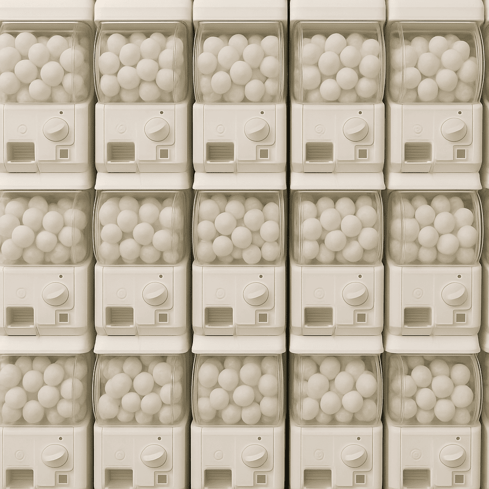

探索我們不同的永續扭蛋設計系列，每個系列都承載著獨特的文化意涵與環保理念
邀集台灣與日本各五位設計師，以招財貓為共同主題，使用100%回收保麗龍創作永續扭蛋公仔。每件作品都融合了設計師的文化背景與環保理念。
全新的扭蛋系列已經登場，帶來更多創新設計與永續理念的結合。這個充滿驚喜的新系列正式與大家見面。
扭蛋（Gashapon）是亞洲廣受歡迎的娛樂形式，透過投幣與隨機掉落的機制帶來驚喜與收集樂趣。然而，99%以上的扭蛋玩具都是使用一次性塑膠製作，包含扭蛋機與扭蛋殼。我們認為未來的扭蛋機，應該要是符合永續指標，且足夠吸引人的產品。
本計畫旨在從未來設計的視角，重新審視扭蛋產業，思考其社會意義與永續可能。我們提出問題：「一個大眾熟悉的娛樂形式，是否也能成為環境教育與材料創新的載體？」

RE:TWIST 不僅是扭蛋設計計畫，更是對未來娛樂產業永續發展的思考。我們相信，每一個小小的扭蛋都能承載深刻的環保理念與文化故事。